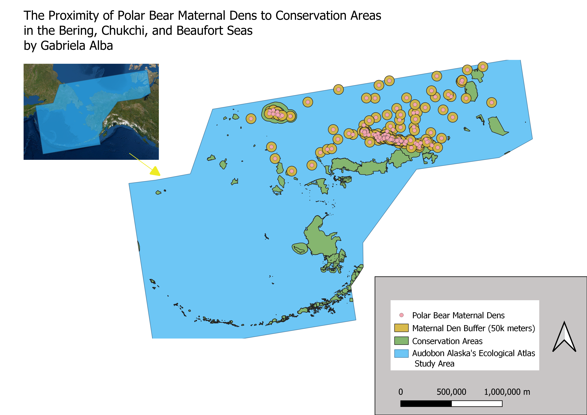

Homework 9: Vector Spatial Analysis
Gabriela Alba
This map sought to look at how close polar bear maternal dens are to conservation areas in the Bering, Chukchi, and Beaufort Seas. Polar bear maternal dens are essential to the birth and development of cubs because they protect cubs from extreme weather conditions during the harsh winter months in the Arctic. I decided to make this map to visually see how close dens are to conservation areas when taking into consideration a 50,000 meter buffer.
Map
In order to make this map, I had to use a clip and buffer tool. I first used the clip tool to only look at polar bear dens that fell within the Audobon Alaska's Ecological Study Area. I decided to use this area as my area of study because Audobon Alaska's Ecological Atlas covers the Bering, Chukchi, and the Beaufort Seas--critical denning habit for polar bear mothers. After using the clipping tool, I used the buffer feature to add a 50,000 meter buffer around each maternal den. This in turn, provided a conservation buffer so that I could consider the vulnerable habitat around each den. The use of these two tools allowed me to analyze the proximity of each den around the conservation areas identified within the Audobon Atlas Study Area. It is important to note that I decided not to use the intersect tool to only look at polar bear dens that intersected with conservation Areas. I ultimately decided to look at all polar bear dens within the study area so that I could look at the distribution of all polar bear dens relative to one another and relative to the conservation areas.

Data used for this project
Source to the CSV
Source to the Shapefiles
Link to cleaned CSV
Link to Shapefile
Link to Shapefile